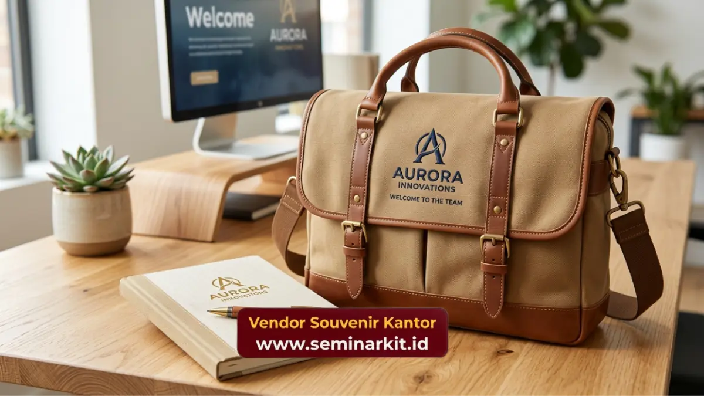

Isi paket welcome kit karyawan baru yang ideal umumnya terdiri dari tumbler custom logo, notebook dan alat tulis, tas kerja atau tote bag, serta starter kit meja kerja. Kombinasi ini dipilih karena fungsional dipakai sehari-hari sekaligus menampilkan identitas brand perusahaan secara konsisten.
- Welcome kit ideal berisi tiga hingga lima item fungsional dengan logo custom.
- Tumbler dan notebook menjadi dua item paling sering dipilih perusahaan.
- Tas kerja custom cocok untuk perusahaan yang ingin membangun kesan profesional lebih kuat.
- Starter kit meja kerja melengkapi kebutuhan dasar tanpa membebani anggaran.
- Penyusunan paket sebaiknya disesuaikan dengan budaya kerja dan anggaran onboarding.
Item Apa Saja yang Umum Dimasukkan ke Welcome Kit?
Item yang umum dimasukkan ke welcome kit adalah tumbler, notebook dengan alat tulis, tas kerja, dan aksesori meja kerja, karena keempatnya menutupi kebutuhan dasar karyawan baru pada minggu pertama kerja.
Berikut rincian item yang sering dipilih perusahaan dalam menyusun welcome kit karyawan baru.
Tumbler Custom Logo sebagai Item Utama
Tumbler menjadi item utama karena dipakai hampir setiap hari, baik saat bekerja di kantor maupun rapat.
Bahan stainless steel dengan fitur insulasi panas-dingin umumnya menjadi pilihan favorit karena daya tahan pemakaian jangka panjang.
Logo perusahaan yang dicetak melalui teknik laser engraving atau sablon UV pada tumbler custom logo memberikan kesan premium sekaligus tahan lama, tidak mudah pudar meski dipakai dan dicuci berulang kali.
Notebook dan Set Alat Tulis
Notebook dengan cover custom logo memberi kesan profesional sekaligus langsung terpakai sejak sesi orientasi hari pertama. Pasangan set alat tulis, seperti pulpen custom, melengkapi kebutuhan mencatat tanpa karyawan baru perlu membeli sendiri.
Pemilihan ukuran notebook A5 umumnya lebih praktis dibawa ke ruang meeting dibanding ukuran A4 yang lebih besar.
Tas Kerja atau Tote Bag Custom
Tas kerja custom logo cocok dipilih perusahaan yang ingin memberi kesan lebih kuat dalam employer branding, karena item ini dibawa keluar-masuk kantor setiap hari kerja.
Bahan kanvas tebal atau parasut tahan air menjadi pilihan umum agar tas tetap awet meski dipakai rutin dalam jangka panjang.

Starter Kit Meja Kerja
Starter kit meja kerja biasanya berisi mousepad, gantungan kartu ID custom, dan sticky note bermerek. Paket kecil ini melengkapi meja kerja karyawan baru agar terasa siap pakai sejak hari pertama tanpa menambah beban anggaran besar.
Bagaimana Menyusun Welcome Kit Sesuai Anggaran?
Cara menyusun welcome kit sesuai anggaran adalah dengan menentukan jumlah item prioritas terlebih dahulu, lalu menyesuaikan bahan dan teknik cetak logo sesuai batas biaya per paket yang sudah ditetapkan perusahaan.
Beberapa pendekatan yang bisa diterapkan:
- Menentukan dua item wajib, misalnya tumbler dan notebook, sebagai inti paket.
- Menambahkan item pelengkap seperti tote bag jika anggaran masih tersedia.
- Memilih teknik cetak logo yang efisien biaya namun tetap terlihat rapi.
- Memesan dalam jumlah lebih besar untuk mendapatkan harga satuan lebih efisien.
Apakah Perlu Menyesuaikan Isi Kit dengan Divisi Karyawan?
Perlu, karena kebutuhan karyawan lapangan berbeda dengan karyawan kantor. Karyawan lapangan mungkin lebih membutuhkan tumbler tahan banting, sementara karyawan kantor lebih terbantu dengan starter kit meja kerja lengkap.
Penyesuaian ini membuat welcome kit terasa lebih relevan dan benar-benar terpakai, bukan sekadar formalitas penyerahan barang di hari pertama.
Welcome kit karyawan baru yang ideal menggabungkan item fungsional seperti tumbler, notebook, tas kerja, dan starter kit meja kerja, disesuaikan dengan anggaran serta kebutuhan divisi karyawan. Kombinasi yang tepat membuat paket benar-benar terpakai, bukan sekadar formalitas.
Vendor Souvenir Kantor siap membantu menyusun isi welcome kit sesuai kebutuhan dan anggaran perusahaan Anda, lengkap dengan custom logo dan pengiriman ke seluruh Indonesia. Konsultasikan kebutuhan paket welcome kit Anda melalui vendorsouvenirkantor.web.id.

Banner promosi: klik gambar untuk langsung terhubung ke WhatsApp tim sales.